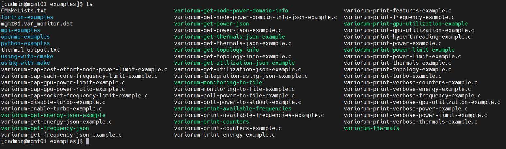
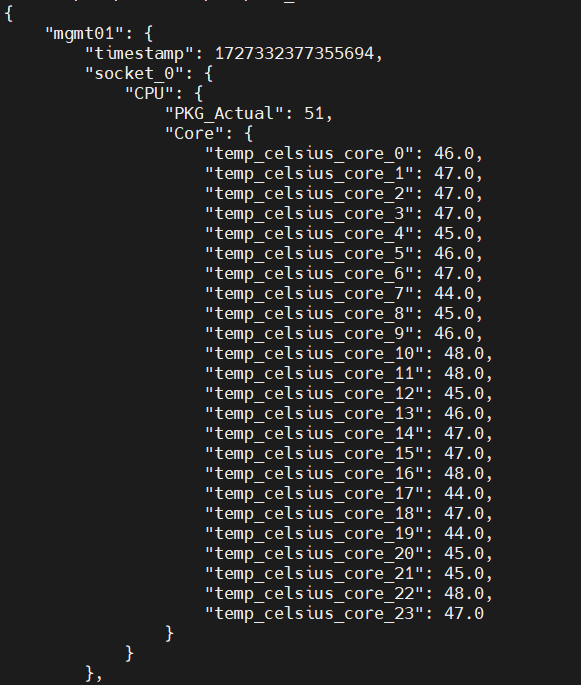

Grafana Documentation
Welcome to the Grafana documentation. Here you will find all the necessary information to install and configure grafana. For full documentation visit grafana.com.
Project layout
grafana docs/
- index.md # The documentation homepage.
- installation.md
- configuration.md
- datasources.md
- dashboards.md
What is Grafana ?
Grafana is a multi-platform open source analystics and interactive visualization web application.It provides
- Charts
- Graphs
- Alerts 
Features
- Visualize: Grafana has a plethora of visualization options to help you understand your data beautifully.
- Alert : Seamlessly define alerts where it makes sense- while you're in data
- Unify : Grafana supports dozens of databases,natively.Mix them together in the same Dashboard
- Open Source: Grafana is completely open source, and backed by a vibrant community.
- Extend : Discover hundreds of dashboards and plugins in the ooficial library
Steps for installating Grafana
1) Add Grafana GPG key and repository:
```sh
sudo wget -q -O - https://packages.grafana.com/gpg.key | sudo apt-key add -
sudo add-apt-repository "deb https://packages.grafana.com/oss/deb stable main"
```
2) Install Grafana:
```sh
sudo apt-get update
sudo apt-get install grafana
```
3) Start and enable Grafana service:
```sh
sudo systemctl start grafana-server
sudo systemctl status grafana-server
sudo systemctl enable grafana-server
```
4) Access Grafana:
Open your browser and go to `http://localhost:3000`. The default login is `admin` and password is `admin`.
( Note: Grafana by default runs on port no: 3000 )
Datasource
We're going to add Prometheus Datasource to our Grafana. But before adding it we should know about Prometheus
What is Prometheus ?
- Prometheus is a software application used for event monitoring and alerting
- It records real-time metrics in a time series database built using a HTTP pull model. 
Steps For Installing Prometheus
1 Create a Directory:
```sh
create a directory of any name say "grafana"
mkdir grafana
cd grafana
```
2 Download Prometheus:
```sh
wget https://github.com/prometheus/prometheus/releases/download/v2.53.0-rc.1/prometheus-2.53.0-rc.1.linux-amd64.tar.gz
```
3 Extract the tar file:
```sh
tar -xvf prometheus-2.53.0-rc.1.linux-amd64.tar.gz
cd prometheus-2.53.0-rc.1.linux-amd64/
```
4 Create a systemd service file for Prometheus:
sudo vi /etc/systemd/system/prometheus.service
(add the following line of code to make a service file for your Prometheus)
[Unit]
Description=Prometheus Service
After=network.target
[Service]
Type=simple
ExecStart=/usr/local/bin/prometheus/prometheus --config.file=/usr/local/bin/prometheus/prometheus.yml
[Install]
WantedBy=multi-user.target
5 Reload systemd and start Prometheus:
```sh
sudo systemctl daemon-reload
sudo systemctl start prometheus
sudo systemctl enable prometheus
```
6 Access Prometheus:
Open your browser and hit `10.208.34.9:9090`.
(Note : Prometheus by deafault runs on port no. 9090)
Prometheus primarily pulls data from various exporters and endpoints configured in the prometheus.yml file.
Common Exporter
- Node Exporter: Collects hardware and OS metrics.
Steps For Installing Prometheus
wget https://github.com/prometheus/node_exporter/releases/download/v1.8.1/node_exporter-1.8.1.linux-amd64.tar.gz
tar -xvf node_exporter-1.8.1.linux-amd64
sudo cp node_exporter-1.8.1.linux-amd64/node_exporter /usr/local/bin/
2 Create a systemd service file for Node-Exporter:
sudo vi /etc/systemd/system/node-exporter.service
(add the following line of code to make a service file for your Node-Exporter)
[Unit]
Description=Prometheus Node Exporter Service
After=network.target
[Service]
Type=simple
ExecStart=/usr/local/bin/node_exporter
[Install]
WantedBy=multi-user.target
3 Start and enable the service:
sudo systemctl daemon-reload
sudo systemctl start node_exporter
sudo systemctl enable node_exporter
Adding a Prometheus Datasource In Grafana
-
Go to
Configuration > Data Sources. -
Click on
Add data source. -
Select
Prometheusfrom the list. -
Configure the following settings:
- Name: Prometheus
- URL: http://localhost:9090
-
Click
Save & Test.
Dashboards
Creating a New Dashboard
- Click on the
+icon in the sidebar and selectDashboard. - Click
Add new panel. - Click
Saveand give your dashboard a name.
Troubleshooting
Common Issues
-
Grafana Server Not Starting:
- Check the logs located at
/var/log/grafana/grafana.log. - Ensure the service is running:
sudo systemctl status grafana-server.
- Check the logs located at
-
Datasource Not Connecting:
- Verify the URL and credentials.
- Check the datasource service is running.
- Check Grafana logs for errors.